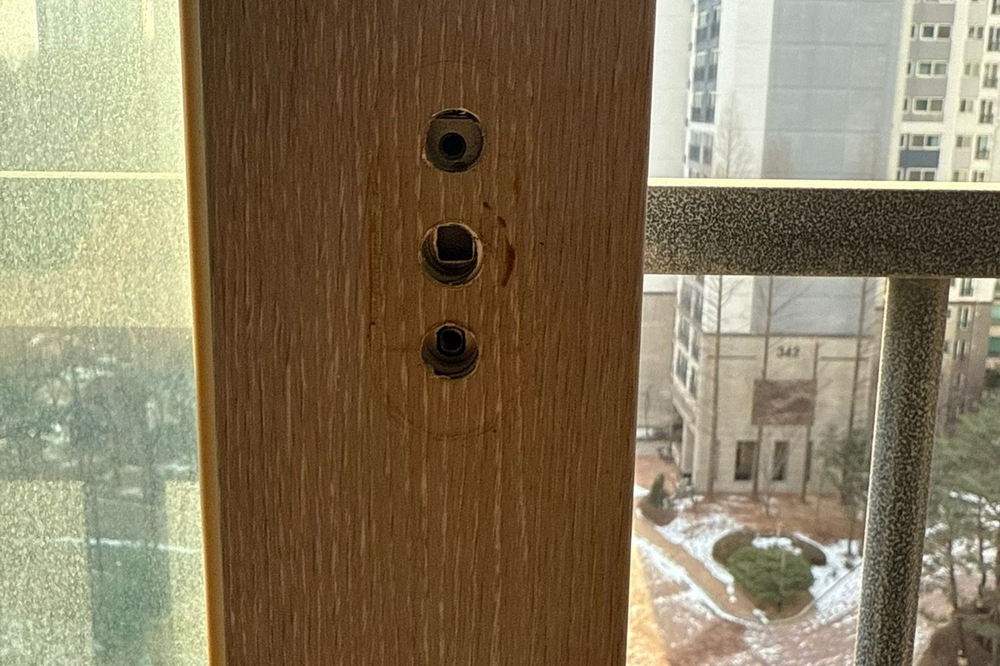
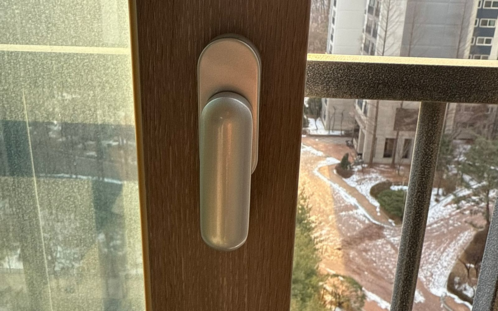
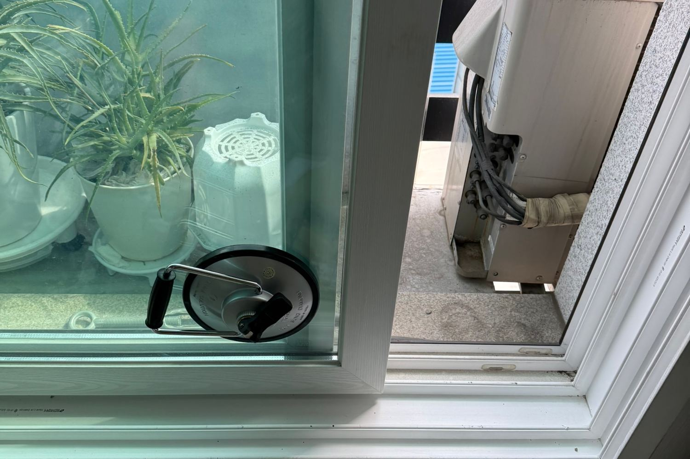

창문손잡이 교체
창문손잡이, 샤시손잡이, 샷시손잡이는 부르는 이름만 다르고 같은 부품입니다. 창을 여닫고 잠그는 그 손잡이입니다.
010-7360-1917부르는 이름은 달라도 같은 부품입니다
창문손잡이라고 하시는 분도 있고, 샤시손잡이나 샷시손잡이라고 하시는 분도 있습니다. 창호손잡이라고 부르는 경우도 있습니다. 전부 같은 부품이고, 저희가 교체하는 그 손잡이입니다. 표기 때문에 다른 업체를 찾으실 필요는 없습니다.
베란다 창문이 제일 많이 상합니다
집 안에서 가장 자주 여닫는 창이 베란다 창입니다. 빨래 널고 환기하면서 하루에 여러 번 돌리게 되니 내부 기어가 먼저 마모됩니다. 거실 큰 창이나 방 창은 상대적으로 오래 갑니다.
손잡이가 문제인지 안쪽이 문제인지 다릅니다
손잡이가 헐거운 것과, 손잡이는 멀쩡한데 돌려도 창이 안 잠기는 것은 다른 증상입니다. 앞은 손잡이 교체, 뒤는 로드나 크리센트 교체입니다. 손잡이만 바꾸면 증상이 그대로 남으니 증상을 먼저 여쭤봅니다.
사진 한 장이면 부품을 맞춰 갑니다
손잡이 사진을 보내주시면 브랜드와 형태로 규격을 먼저 확인합니다. 그래서 방문 한 번에 끝납니다. 부품을 안 가져와서 다시 오는 일이 없습니다.
이런 작업을 합니다
- 베란다·거실·방 창문손잡이 교체
- 샤시손잡이 헐거움·파손 교체
- 돌려도 안 잠기는 창 — 로드·크리센트 확인
- 중문·발코니 창호 손잡이 교체
- 단종 브랜드 호환 부품 매칭
- 사진 확인 후 부품 준비해 당일 방문
PHOTO
창문손잡이 교체 시공 사진

분리되어 나사 구멍이 드러난 샷시 손잡이 자리

LX샷시 손잡이 교체 완료 클로즈업

창문이 뻑뻑해 특수 공구로 여는 모습
FAQ
창문손잡이 교체, 자주 묻는 질문
같은 부품입니다. 창문손잡이, 샤시손잡이, 샷시손잡이, 창호손잡이 모두 같은 걸 가리킵니다.
갑니다. 한 개 교체도 받습니다. 여러 개를 한 번에 하시면 한 번 방문으로 모두 끝냅니다.
그건 손잡이가 아니라 안쪽 로드나 크리센트 문제인 경우가 많습니다. 손잡이만 바꾸면 그대로 남습니다. 증상을 말씀해 주시면 어느 부품인지 구분해 드립니다.
손잡이 사진을 보내주시면 형태로 확인합니다. 로고가 지워져 알아보기 어려우면 방문해서 실측하고 맞는 부품으로 교체합니다.
다른 작업 · 부품 · 시공사례
창문손잡이 교체, 사진 한 장이면 됩니다
손잡이 사진을 보내주시면 브랜드와 규격을 먼저 확인해
맞는 부품을 준비해서 방문합니다. 365일 24시간 상담 가능합니다.